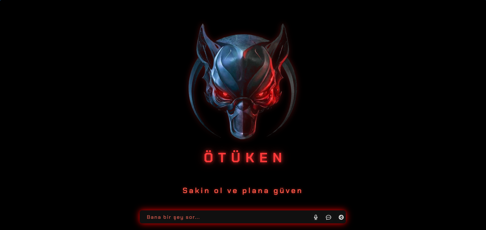

Sesle konuşulan, bilgisayarı kullanabilen, kendi görsel arayüzü olan kişisel bir yapay zeka asistanı. Python ile geliştirildi, tek kuruş API ücreti ödemeden çalışıyor.
Filmlerdeki yapay zeka asistanı fikri herkesin hoşuna gider; internette de yüzlerce "JARVIS klonu" deposu vardır. Ama bunların çoğu ya İngilizce konuşur, ya ücretli bir API'ye bağlıdır, ya da ezberlenmiş kalıplarla çalışır: "hava durumu" kelimesini duyunca hava fonksiyonunu çağırır, cümleyi gerçekten anlamaz.
Ötüken'i bu üç sorunu çözmek için yazdım: Türkçe konuşur, hiçbir ücretli servise bağlı değildir ve komutları kalıp eşleştirmeyle değil dil modelinin kendi kararıyla çalıştırır.
Ağır işlerin tamamı ayrı bir iş parçacığında çalışıyor; asistan düşünürken arayüz donmuyor.

eel kuruyor, böylece ekrandaki her şey HTML/CSS ile tasarlanabiliyor.Kullanıcı ister mikrofona konuşuyor ister yazıyor. Konuşma metne çevrildikten sonra Gemini'ye gidiyor; model cevabı doğrudan üretebiliyorsa üretiyor, gerçek bir bilgi ya da eylem gerekiyorsa önce ilgili aracı çağırıyor. Dönen cevap hem ekrana yazılıyor hem sesli okunuyor.
Her parçayı seçerken tek soru vardı: bunun ücretsiz ve kalıcı bir karşılığı var mı? Ücretli bir servise bağlanan her parça, projenin bir gün duracağı anlamına geliyordu.
| Parça | Seçim ve gerekçe |
|---|---|
| Beyin | Google Gemini ücretsiz katmanı — kredi kartı istemiyor, Türkçesi iyi ve araç kullanımını destekliyor |
| Dinleme | Türkçe konuşma tanıma; ortam gürültüsüne göre kendini ayarlıyor, konuşma bitince otomatik kesiyor |
| Konuşma | Ücretsiz doğal Türkçe ses + kendi yazdığım ses efekti zinciri |
| Arayüz | Açık kaynak bir HUD tabanı; Python–JavaScript köprüsüyle bağlandı |
| Bilgi kaynağı | Hava durumu için anahtar gerektirmeyen açık bir servis — kayıt, kota, ücret yok |
Taban aldığım proje yüz tanıma, uyandırma kelimesi ve mesajlaşma entegrasyonu gibi eklerle geliyordu. Hepsini çıkardım; arkasına kendi temiz beynimi yazdım. Bir projeyi devralmanın en zor kısmı kod eklemek değil, ihtiyacım olmayanı silmeye cesaret etmekti — çünkü silinen her satır, sonra bakmam gerekmeyecek bir satır.
İlk sürüm klasik yöntemle çalışıyordu: cümlede "hava" geçiyorsa hava fonksiyonunu çağır, "saat" geçiyorsa saati söyle. Bu yöntem demo videolarında iyi görünür, gerçek kullanımda kırılır. "Dışarı çıksam üşür müyüm?" cümlesinde "hava" kelimesi geçmez.
Bu yüzden mimariyi değiştirdim: asistanın yetenekleri artık dil modeline araç olarak tanıtılıyor. Modelin eline "hava durumu", "saat", "tarih", "uygulama aç" ve "internette ara" araçları veriliyor; cümleyi anlayıp hangisini çağıracağına, hangi şehir ya da hangi uygulama olduğuna model kendisi karar veriyor.
Bu geçişin bedeli de vardı: araç kullanan her soru, tek soruya göre yaklaşık iki kat istek harcıyor. Ücretsiz katmanın dakika başına sınırı olduğu için modeli daha yüksek limitli hafif sürüme çektim. Doğru mimarinin maliyetini ödemek, yanlış mimariyle yaşamaktan ucuzdu.
Araçlar modele ayrı bir tarif dosyasıyla değil, doğrudan Python fonksiyonları olarak veriliyor. Fonksiyonun açıklaması ve parametre tipleri, modelin o aracı ne zaman ve nasıl çağıracağını belirleyen tek kaynak. Yani burada dokümantasyon süs değil, çalışan koddur; açıklamayı zayıf yazarsanız model aracı yanlış zamanda çağırır.
Asistanın sesi projenin karakteriydi; robot gibi cızırtılı bir ses her şeyi ucuzlatırdı. Ücretsiz doğal Türkçe bir erkek sesiyle başladım, sonra o sesi bir efekt zincirinden geçirdim:
| Adım | Ne yapıyor |
|---|---|
| Tonu düşürme | Sesi kalınlaştırıyor; ardından hız düzeltmesiyle konuşma süresi eski hâline getiriliyor |
| Yankı | Kapalı bir mekândan konuşuyormuş hissi — "makine gövdesi" etkisi |
| Titreşim | Çok hafif bir metalik vızıltı; abartıldığında ses komikleşiyor |
| Ses seviyesi eşitleme | Her cümlenin aynı yükseklikte duyulması |
Sonuç, kapaktaki videoda duyulan ses: doğal bir konuşmanın anlaşılırlığı, makinenin tonu. Bunun avantajı sadece estetik değil — tamamen kontrol edilebilir. Sesi kalınlaştırmak, yankıyı azaltmak ya da vızıltıyı kapatmak tek satırlık bir ayar.
Arayüzü baştan yazmak haftalar alırdı ve öğrenme getirisi düşüktü. Açık kaynak bir HUD tabanı aldım, gereksiz yüklerini attım, arkasına kendi beynimi yazdım.
Neden: zamanı, projeyi benzersiz yapan yere harcamak istedim — arayüz o yer değildi.
Çalışan bir sistemi bozup yeniden kurmak anlamına geliyordu. Ama kalıp yöntemi her yeni yetenekte biraz daha kırılganlaşıyordu.
Neden: her yeni özellikte katlanarak artan bir bakım borcunu erken ödedim.
Araç kullanımı istek sayısını artırınca kota duvara dayandı. Modeli daha yüksek limitli hafif sürüme çektim ve kota dolduğunda kullanıcının anlayacağı bir cevap verdirdim.
Neden: ücretsiz olmak bir kısıt değil, projenin şartıydı; mimari ona uymalıydı.
Hedeflediğim ses klonlaması istediğim kaliteye ulaşmadı (bir sonraki bölüm). Vasat bir sonucu "olmuş sayıp" geçmek yerine yaklaşımı tamamen değiştirdim.
Neden: kullanıcı olarak her gün duyacağım bir sesti; "idare eder" yetmezdi.
Kişisel bir projede en kolay ihmal edilen şey hata durumlarıdır — çünkü kendi bilgisayarınızda genelde her şey yolunda gider. Ötüken'de her dış bağımlılığın bir düşme planı var:
| Ne bozulursa | Ne oluyor |
|---|---|
| Kota dolarsa | Hata mesajı yerine sakin bir cevap: biraz bekleyip tekrar sorması söyleniyor |
| İnternet kesilirse | İstek arayla üç kez yeniden deneniyor; olmazsa bağlantıyı kontrol etmesi söyleniyor |
| Ses efekti üretilemezse | Efektsiz düz ses çalınıyor — asistan susmuyor |
| Ses servisi çalışmazsa | Tamamen çevrimdışı yedek ses devreye giriyor |
| Mikrofon yoksa | Sessizce çökmek yerine durumu sesli bildiriyor, yazarak devam edilebiliyor |
Ortak ilke şu: asistan hiçbir durumda sessizce ölmüyor. Sesli bir asistanda cevapsızlık, hata mesajından daha kötüdür — kullanıcı sistemin çalışıp çalışmadığını bilemez.
Asistanın, ilham aldığım karakterin sesiyle konuşmasını istiyordum. Bunun için yerel çalışan bir ses klonlama modeli kurdum, hatta kaynak kayıtlardaki müziği sesten ayırmak için ayrı bir müzik ayırma modeli daha kurdum.
Sonuç kabul edilebilir değildi. Elimdeki kaynak kayıtların neredeyse tamamında arkada müzik vardı; müzik ayrıldıktan sonra seste kalan izler klonun kalitesini sınırladı. Bazı kelimelerde uzamalar, tonda dalgalanmalar kaldı. Daha fazla uğraşmak bu tavanı kaldırmayacaktı: sorun yöntemde değil, verideydi.
Bunun üzerine hedefi değiştirdim. Asistan zaten bir yapay zeka olduğuna göre, birini taklit eden kusurlu bir ses yerine bilerek makine gibi konuşan temiz bir ses daha doğruydu. Önceki bölümdeki efekt zinciri bu kararın sonucu.
Bu bölümü kitapçıkta tuttum, çünkü projenin en çok şey öğrendiğim kısmı burasıydı: bir yaklaşımın ne zaman terk edilmesi gerektiğini anlamak.